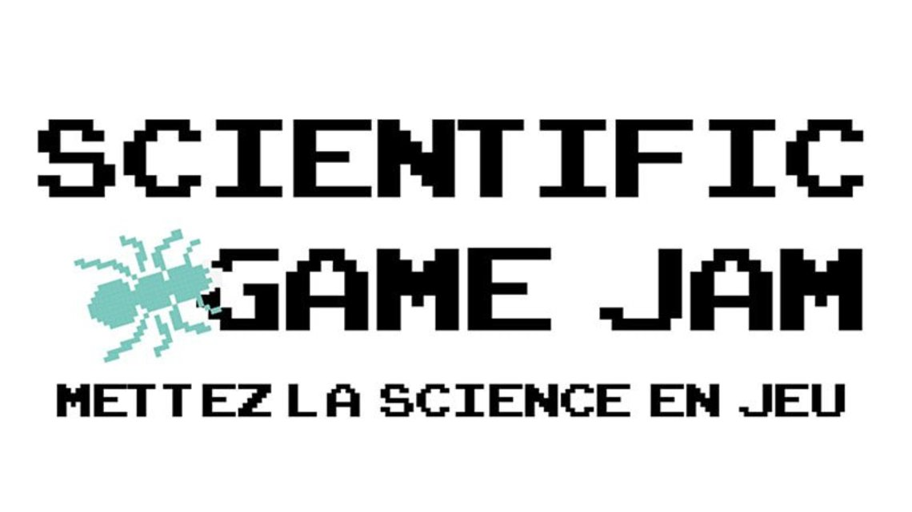
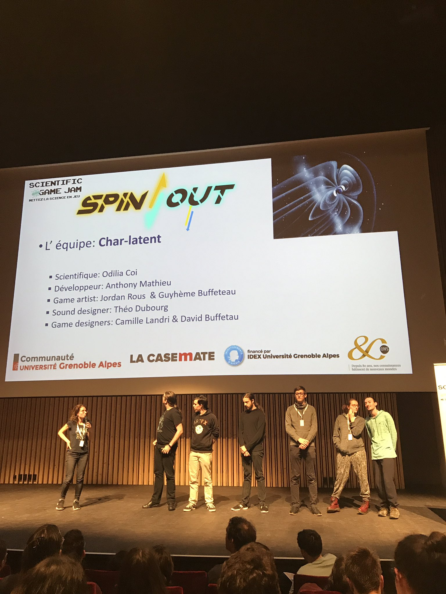
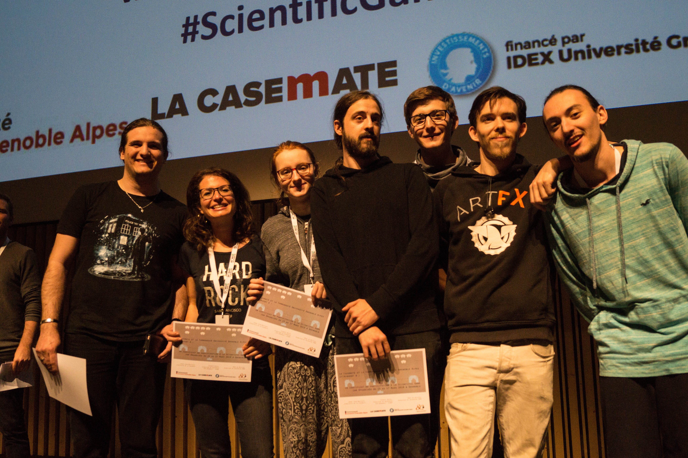
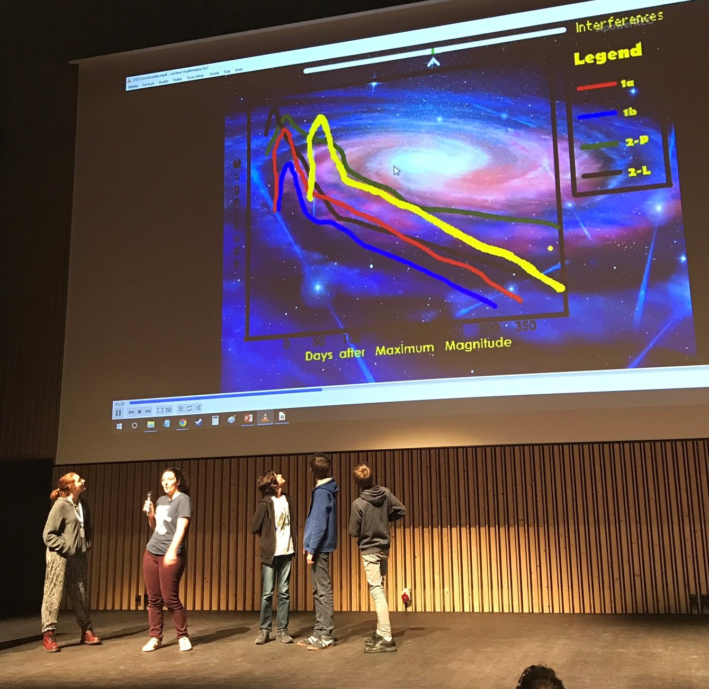
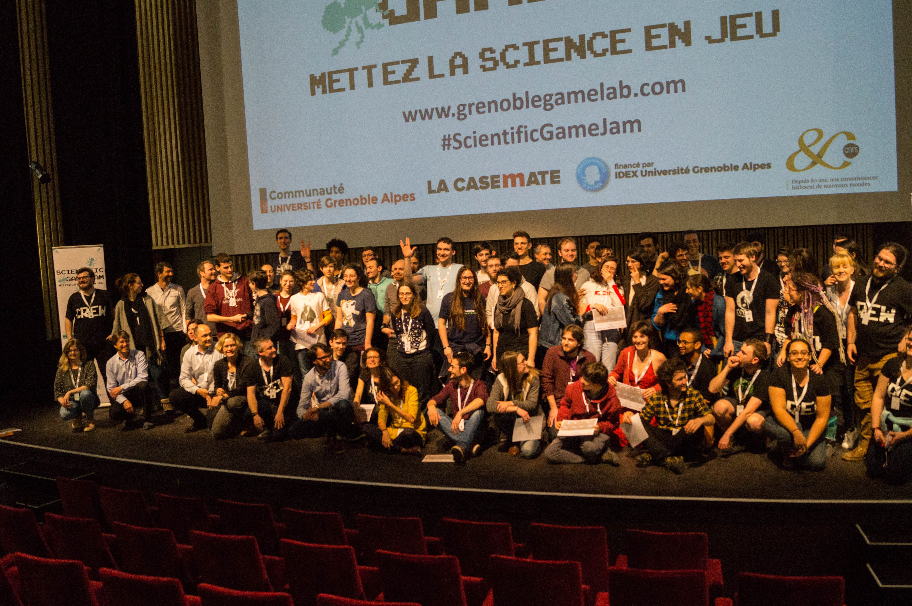

In 2019, I participated to the fifth
Scientific Game Jam
in Grenoble. A game jam is a programming marathon during which the participants have
a short time (typically a weekend) to create a video game centered around a specific topic.
During the Scientific Game Jam, teams of programmers meet with PhD students to create
a game inspired by their thesis, intending to explain and illustrate their research topics
to a broad audience. In 2019, 9 teams participated to the event, most of them were composed
of a developer, a game designer, a graphic designer and a PhD student.

I was part of the Char'latent team as a game designer, together with my teammates we developed
the game
Spin Out (
you can find it here)
and we won the Public Choice Award!
It is based on the work of Dr. Odilia Coi and focused on Spintronic and Tunnel Magnetoresistance.

This game is an
endless runner, an arcade game in which you progress by following certain patterns in
an environment that is continuously generated, the point being to survive as long as possible.
Here, you drive a spaceship through separate tunnels corresponding to the spin direction that will encode
the correct information, which are indicated with colours.

On the side of this submission, I helped a team of six young developers who joined the Game Jam
with
Cocoricodes, a school that aims to teach programming to kids
in Grenoble. I taught them about the different types of Supernovae and how to differentiate them, and they made
a game about it! They used Scratch, an block-based programming language, and created a game in which you play
a scientist who needs to classify Supernovae of different types according to their light curves. It was
their first game and it is very impressive, unfortunately it is not available for the public.

I really enjoyed using my programming and game design skills to inform the public about various research topics.
I really hope to be able to participate to similar events in the future!